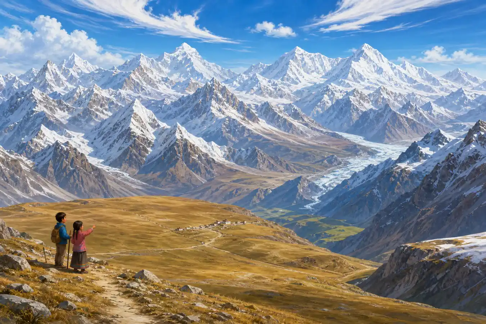
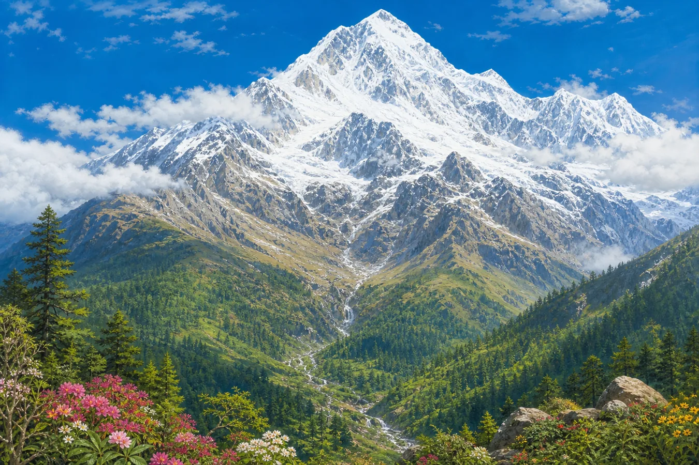
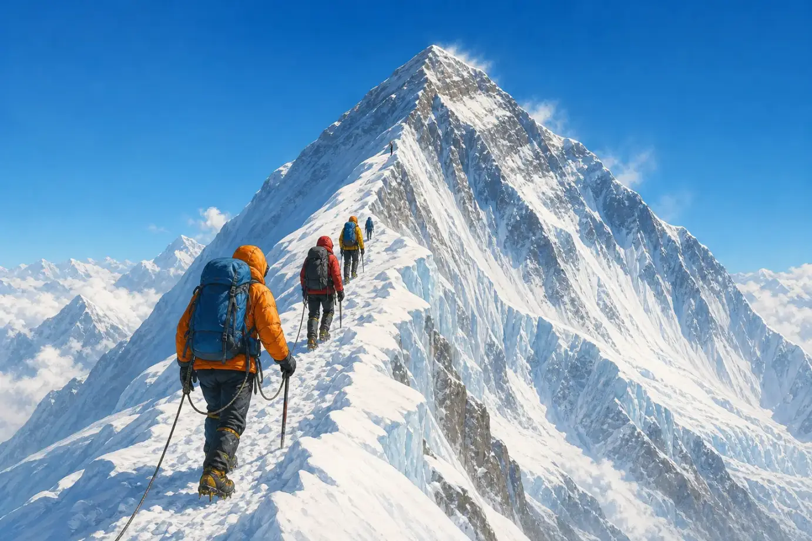

珠穆朗玛峰：怎样量出世界最高峰？
Mount Everest: How Do You Measure the World's Highest Mountain?
Page 1
一座山，两边都是国家
One Mountain, Two Countries

Mount Everest stands in the Himalayas. The border between China and Nepal crosses its summit.
在亚洲南部，喜马拉雅山脉像一道巨大的皱褶横在地图上。那里有一座山高过地球上所有其他山峰的海拔。它就是Zhūmùlǎngmǎ Fēng · 位于中国与尼泊尔边界、海拔世界最高的山峰，英语常称 Mount Everest。。
这座山正好站在中国和尼泊尔之间。中国使用“珠穆朗玛峰”这个名字，英语里常叫它 Mount Everest。无论从哪一边看，山顶都是同一个覆盖着冰雪的地方。
2020 年，中国和尼泊尔共同宣布了一个测量结果：珠穆朗玛峰海拔 8,848.86 米，大约是 29,032 英尺。可是，谁也不可能拿着一卷那么长的尺子，从山脚一直爬到山顶。这个数字到底是怎么量出来的呢？
Across southern Asia, the Himalayas look like a giant wrinkle on a map. One peak there rises higher above sea level than any other mountain on Earth. It is called Zhūmùlǎngmǎ Fēng · 珠穆朗玛峰 · The world's highest peak above sea level, called Mount Everest in English. in China and Mount Everest in English.
The mountain stands between China and Nepal, and the border crosses its snowy summit. Climbers can approach it from either country, but both sides lead toward the same icy peak.
In 2020, China and Nepal announced a shared measurement: 8,848.86 meters, or about 29,032 feet, above sea level. But no one can unroll a tape measure that long and stretch it from the bottom to the top. So how did anyone measure it?
Page 2
没有巨型尺子，怎样量一座山？
How Do You Measure a Mountain without a Giant Ruler?
量身高时，我们从地板开始。量山也需要一个共同的起点。测量人员把平均海平面当作“零”，再计算山顶比海平面高多少。这就是海拔。
先想象一根很高的旗杆。测量人员站在远处，量出自己离旗杆有多远，再用一个像小望远镜的工具对准旗杆顶端。地面是三角形的底边，旗杆是竖起来的一边，望向顶端的视线是斜着的一边。知道底边有多长、视线有多斜，就能用数学算出旗杆有多高。
现在，把旗杆换成珠穆朗玛峰。测量人员先量好自己站的地方比海平面高多少，再用同样的办法，算出山顶比自己站的地方高多少。最后做一道加法：脚下这块地的高度，加上山顶高出的部分，就是珠穆朗玛峰的海拔。他们会换几个位置再量一次，看看答案是不是差不多。
When we measure a child's height, we begin at the floor. A mountain also needs a shared starting point. Surveyors use average sea level as zero, then work out how high the summit rises above it. That height is called elevation.
Now picture a very tall flagpole. A surveyor stands some distance away and measures how far it is to the pole. Then a tool that looks a little like a small telescope is pointed at the top. The ground is the bottom of a triangle. The flagpole is the upright side. The straight line from the tool to the top is the sloping side. If the surveyor knows the length of the bottom and how steeply the tool points upward, math can find the height of the upright side.
Now replace the flagpole with Everest. First, surveyors find the height of the ground under their feet. Then they use the same triangle method to find how much higher the summit is. The last step is simple addition: the height of the ground plus the extra height to the summit equals Everest's elevation. They repeat the measurement from other places to see whether the answers are close.
Page 3
换一把尺子，冠军会变吗？
Change the Ruler, Change the Winner

The Himalayas contain many enormous peaks, but Mount Everest has the highest elevation above sea level.
如果问题是“哪座山的海拔最高”，冠军就是珠穆朗玛峰。但换一种量法，答案会变得很有趣。
夏威夷的冒纳凯阿山有很大一部分藏在海水下面。如果从海底的山脚量到峰顶，它比珠穆朗玛峰还高。厄瓜多尔的钦博拉索山靠近赤道。地球并不是一个完美的圆球，中间稍微鼓起来，所以钦博拉索的峰顶离地心最远。
一座山可以赢得“海拔最高”，另一座可以赢得“从山脚到山顶最高”，还有一座可以赢得“离地心最远”。它们没有谁偷偷长高了，只是我们的尺子换了起点。
If the question is “Which mountain has the highest elevation?” Mount Everest wins. But a different way of measuring gives us a different—and surprising—answer.
Much of Hawaii's Mauna Kea is hidden below the ocean. Measured from its base on the seafloor to its summit, it is taller than Everest. Ecuador's Chimborazo stands near the equator. Earth is not a perfect ball; it bulges a little around the middle. That makes Chimborazo's summit the point on Earth's surface farthest from the planet's center.
One mountain can be highest above sea level, another tallest from base to top, and another farthest from Earth's center. None of them suddenly grew. We simply moved the bottom of the ruler.
Page 4
山顶的石头从海底来
Rocks from an Ancient Sea

Mount Everest rises from lower valleys to an icy summit, with very different landscapes at different heights.
珠穆朗玛峰山顶的岩石里，藏着古代海洋生物留下的痕迹。海里的岩石怎么跑到了世界最高处？
很久以前，今天的印度所在的大片陆地慢慢向北移动，撞上了亚洲。两边的岩石被推挤、折起，像桌布被两只手从两端往中间推。喜马拉雅山脉就这样慢慢升了起来。直到今天，这片土地仍在移动，山也会发生很小的变化。
从山谷向上走，树木会越来越少，空气越来越冷，也越来越稀薄。到了最高处，只剩岩石、冰雪和猛烈的风。那里太高、太冷，人不能长期生活。
Some rocks near Everest's summit contain traces of creatures that once lived in an ancient sea. How did seafloor rock reach the top of the world?
Long ago, the great piece of land that includes India moved north and pressed into Asia. Rock between them was squeezed and folded upward, like a tablecloth pushed from both ends. The Himalayas slowly rose. The land is still moving today, and the mountains continue to change by tiny amounts.
As we climb from a valley, trees grow fewer, the air becomes colder, and there is less oxygen to breathe. Near the summit, only rock, ice, snow, and fierce wind remain. It is too high and too cold for people to live there for long.
Page 5
登顶不是一个人的故事
Reaching the Top Takes a Team

Climbers travel together on a snowy slope. A real Everest climb requires training, guides, equipment, and many people working together.
1953 年，新西兰登山者埃德蒙·希拉里和来自喜马拉雅山区的向导丹增·诺尔盖一起到达峰顶。他们成了第一支被确认成功登顶并安全返回的队伍中的两个人。
“两个人登上珠峰”听起来像一个很短的故事，真实过程却需要一个大团队。有人寻找路线，有人固定绳索，有人搬运帐篷、食物和氧气瓶。生活在喜马拉雅山区的夏尔巴人熟悉高山环境，许多人长期担任向导和高山工作人员。没有这些伙伴，许多著名的登顶故事根本不会发生。
山上的空气太稀薄，天气也可能突然变化。最勇敢的决定有时不是继续向上，而是转身下山。登山者只有安全回来，才能把自己在世界最高处看见的景色讲给别人听。
In 1953, New Zealand climber Edmund Hillary and Himalayan guide Tenzing Norgay reached the summit together. They were part of the first team confirmed to reach the top and return safely.
“Two people climbed Everest” sounds like a very short story. The real climb took a large team. People found a route, fixed ropes, and carried tents, food, and oxygen tanks. Sherpa people have lived in the Himalayan region for generations, and many work as skilled mountain guides and high-altitude crew members. Without these partners, many famous summit stories could never have happened.
The air is dangerously thin, and the weather can change without warning. Sometimes the bravest choice is not to keep climbing. It is to turn around. Climbers must come safely home before they can tell anyone what they saw from the top of the world.